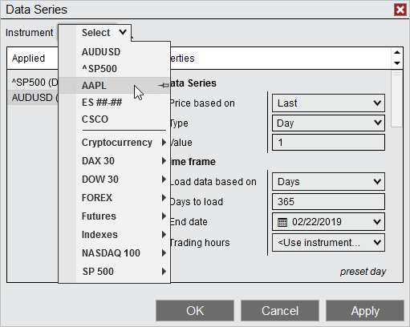
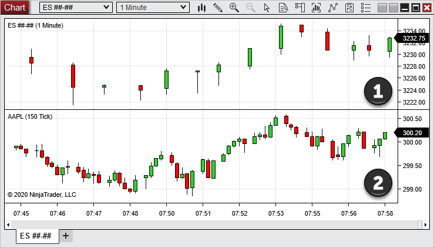
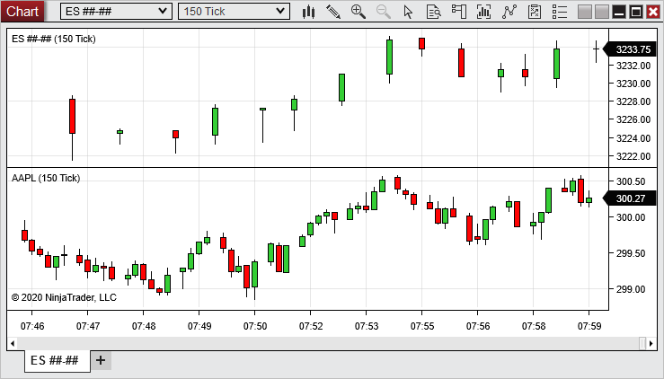
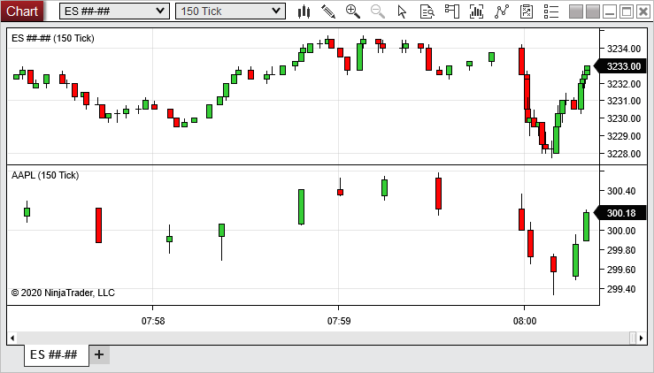

|
<< Click to Display Table of Contents >> Working with Multiple Data Series |


|
Working with Multiple Data Series
|
<< Click to Display Table of Contents >> Working with Multiple Data Series |
|
Multiple Data Series
Multiple Data Series objects can be be viewed within a single chart window, and there are several ways to add Data Series to a chart.
Adding Data SeriesWhen you open a new chart, one or more Data Series will be applied, based on the instruments that you selected when creating the chart. You can add more Data Series to the chart (or remove existing Data Series) at any time via the following process:
1. Open the Data Series dialogue by either clicking the Data Series menu item on the chart toolbar, right-clicking in the chart and selecting the Data Series menu item from the Right Click menu, or double-clicking any selected Data Series on the chart. 2. Use the Instrument Selector or the Search Tool above the "Applied" section in the Data Series window to select a new Data Series. 3. Configure the Data Series' parameters as desired in the "Properties" section, then click the OK button

In the image above, we can use the Instrument Selector to add a Data Series to a chart which is already open. |
Multiple Data SeriesThe image below shows two Data Series plotted within one chart window:
1.ES ##-## (1 Min) 2.AAPL (150 Tick)

Each instrument is placed in its own panel by default, with the scale shown in the right margin of the chart. Many separate panels can be displayed within a single chart window. Instruments and indicators can alternatively be plotted within a single panel, as well. The scale of each Data Series can be justified to the right, to the left, or overlayed on the panel. Please see the "Understanding panels" section of the Navigating a Chart page for more information.
Equidistant Bar SpacingEquidistant Bar Spacing is a chart property that determines whether bars are plotted with an equal distance from each other or plotted on a horizontal axis with even time spacing. The two images below display the same chart with this property set to True and False. When set to True, the distance between bars is equal throughout the chart. When set to false, the distance between bars is not necessarily the same. Bars are instead plotted on a fixed x-axis timeline on which every inch along the axis represents an equal amount of time. This provides the benefit of being able to gauge momentum on non-time based charts, such as tick or volume, by visualizing how long it takes to finish building the next bar. Gaps may occur if no bar formed during the time interval, and overlapping bars may occur if bars are formed near the same time period. Both gaps and overlapping can be seen in the second image below. Equidistant Bar Spacing can be enabled or disabled within the Chart Properties window.
ad
The image above shows two 150 Tick Data Series with "Equidistant Bar Spacing" set to True.

The image above shows the same two Data Series with "Equidistant Bar Spacing" set to False.
Equidistant Bar Spacing with Multiple Data SeriesWhen adding two or more Data Series to a chart, the bar spacing will be determine by the "Primary" data series, which is typically the first series added to the chart.
Configuring Which Data Series is PrimaryYou can optionally re-configure another series to be "Primary" by right clicking on the chart bars and selecting "Set as Primary".
Aggregated X-Axis Time LineWhen using multiple Data Series with different Trading Hours templates, NinjaTrader will set the time axis scale using the earliest begin time and latest end time of all Trading Hours templates applied to the Data Series on the chart. For example, if one instrument has a session begin time of 7:00 AM and an end time of 2:00 PM, and another has a session begin time of 8:00 AM and an end time of 4:00 PM, the chart will have a session begin time of 7:00 AM (from the first instrument) and an end time of 4:00 PM (from the second instrument). |